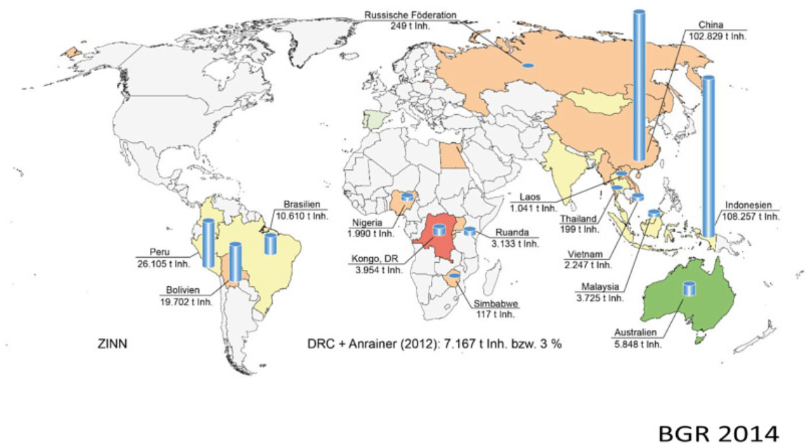

Toys-to-life er er en type videospill hvor spillet lar spillerene bruke ekte leketøysfigurer i selve
videospillene. I slike spill vil som regel selve spillet komme med en skanner som lar spillerene skanne
inn forskjellige leketøysfigurer gjennom en innebygd elektronikk.
Leketøyfigurene påvirker spillet på forskjellige måter. I noen spill vil leketøyene gi deg nye krefter,
eller gjøre kreftene du allerede har sterkere. I noen tilfeller vil du få tilgang til helt nye karakterer
du ellers ikke ville hatt tilgang til. Dette kan for mange føre til at man klarer å utføre oppgaver i
spillene man ellers ikke ville klart uten. Noen ganger vil enkelte oppgaver være umulige å utføre uten
enkelte leketøysfigurer. Dette fører til at man i enkelte tilfeller er nødt til å oppsøke leketøysbutikker
eller videospillbutikker hvor leketøyene selges for å kunne utføre alle oppgavene i spillet.
For å spille toys-to-life spill trenger man en type spillkonsoll, en plattform eller portal som skanner
spillfigurer og spillfigurene selv. Spillfigurene og skanneren er som regel laget av mikrochipper og plast.
Spillkonsoller inneholder mange forskjellige avanserte elektroniske komponenter. Skanneren inneholder en
NFC-leser og spillfigurene inneholder en NFC-tag.
Materialer i toys-to-life
Toys-to-life figurerer kan virke som små, enkle figurer som man kan tenke seg ikke skal være så vanskelige å lage.
I tillegg har de relativt kort levetid ettersom nye figurer kommer på markedet, og de er designet for kun en persons bruk.
Toys-to-life figurer inneholder relativt liten mengde metaller, i hvert fall forhold til en bil, TV, bro eller skyskraper,
men ekstraksjonen av disse metallene fra jordens kjerne og omgjøring av de til brukbare former av metall som går inn i f.eks. kabler,
strømledere og transistorer vil etterlate seg et stort miljøavtrykk. I tillegg til metallene så er det mange andre materialer som også
går inn i toys-to-life. Det er plastikk i figurere, i tillegg til kjemikalier som er nødvendig for å omgjøre metallene som kommer rett
fra jordens kjerne til riktig form i elektronikken. Dette øker miljøavtrykket til hver toys-to-life figur betraktelig.
Hvilke råmaterialer er de vanligste byggesteinene i elektriske komponenter?
Elektriske komponenter inneholder en halvleder. At noe er en halvleder betyr at den leder strøm.
Rent silisium er den aller vanligste halvlederen og blir brukt i stort sett alle mikrochiper.
Hvordan en mikrochip er bygget opp og hvilke materialer den inneholder er avhengig av firmaet som produserer den
og hvilket formål den er produsert for. Sammensetningen er som regel ikke offentlig tilgjengelig, noe som gjør det
vanskelig å vite nøyaktig hvordan mikrochipen er sammensatt. De kan inneholde mer enn 17 forskjellige metaller.
Blant disse metallene er kobber, gull og tantalum som klassifiseres som 3TG-metaller. Dette betyr at de som regel utvinnes
i områder på jorden med mye væpnet konflikt.
Gruvedrift og smelteverk
Miljøaspekter ved gruvedrift
-
Gruvedrift står for 7-10 % av hele verdens energiforbruk. Det meste av denne energien kommer fra olje og kull, og blir brukt til styre store maskiner inne i gruvene.
-
Det enorme restematerialet som blir etterlatt etter at de viktigste metallkjernene er fjernet må bli gjort noe med.
-
Det vanligste er at det blir avsatt som slam/avfallshauger som kan bli like høye som en 30-etasjes stor bygning.
-
Vanlige biprodukter ved gruvedrift er giftige metaller som arsenikk, kvikksølv, bly, sulfitt og kadmium.
-
Ofte kommer disse metallene inn i nærliggende elver og grunnvann fra avfallshaugene, som igjen da kan komme inn i næringskjeden til planter/insekt/dyr/mennesker.
-
I mange land i verden hvor retningslinjer angående gruvedrift har gruvedrift ført til udrikkelig vannkilder og ødelagt marineliv.
Miljøaspekter ved smelteverk
-
Prosessen hvor man smelter metallkjernene som er gravd ut for å separere ut ønsket metall fra urenheter.
-
Noen av urenhetene er giftige og slippes ut i luften, som for eksempel svoveldioksid (sur nedbør), nitrogenoksider (drivhusgass) og bly (Giftig for nesten hvert organ og system i kroppen).
Generelle helseaspekter ved gruvedrift
-
Rygg-og-leddskader
-
Vibrasjonsindusert hvit finger (dårlig sirkulasjon, kan blir så dårlig at man ikke klarer å jobbe lenger)
-
Hørselsskader (hamring, drilling, eksplosjoner, transport)
-
Dårlig sanitær muligheter, kan føre til “hook worm” sykdom som er en larve som lever i avføring som går i kroppen gjennom huden og sprer gift.
-
Under bakken:
-
Gassakkumelering som kan være giftig (CO2, N2, CO, H2S, metangass), og noen kan selvantenne og eksplodere.
-
Gruvekollaps
-
Over bakken:
-
Insektbærende sykdommer som malaria og denguefeber.
-
Jordskred
Silisium (silicone)
Rent silisium (99% ren) er hovedmaterialet i alle elektriske komponenter. Det er kun ren silisium med dopaminer som har strømledningsevne.
Naturlige forekomster
-
Silisium finnes i veldig liten grad i ren form på jorda, men som en forbindelse er den det nest mest vanlige grunnstoffet på jorda etter oksygen.
-
Det meste av silisium forbindelsene finnes som kvartssand eller støv.
Hvor blir det meste produsert?
-
I hele verden: F.eks; Argentina, Australia, India, Iran, Sør Afrika, Bhutan, Bosnia
-
Kina er verdens ledende produsent, produserer dobbelt så mye som Russland og Norge.
-
Russland og Norge er de to nest største produsentene.
Miljøaspekter ved produksjon
-
Selve silisium utvinningen forstyrrer det direkte naturområdet ved store utgravinger,
men ikke i like stor grad som gruveutvinning
-
Sanden og grusen som kommer fra silisium produksjonen har begrenset miljøpåvirkning,
og er dermed ikke sett på som en miljøfare ettersom det ikke inneholder tilførte syrer som kan være skadelig.
-
Doping av silisium for å lage halvledere som silisiumskiver involverer mange giftige kjemikalier som antimon,
arsenikk, bor og fosfor og prosessen skaper mange avfallsprodukter som må håndteres.
-
Prosessen for å lage chips ut av en silisiumskive konsumerer mye mer råmaterialer enn endelig produkt, og er en energikrevende prosess.
-
9,4 kg rå silisium blir brukt til å produsere 1 kg ferdig silisiumskive. Dette tilsvarer 2,25 L vann for å lage en kopp te.
-
I følge FN: 1 cm2 ferdig silisiumskive veier 0,16 g. Krever 20 L vann, 45 g kjemikalier (3500 ganger vekten til skiven), 1.8 kWh energi (tilsvarer at en 100 Watt lyspære lyser i 18h) hvor 1/6 av dette kommer direkte fra fossile energikilder. Produserer også 17 kg avfallsvann og 7.8 g fast avfall.
-
Prosessen produseres avfallsvann som inneholder en del nitrater som passerer gjennom alle rensesystem. Dette er noe planter brukes til næring, men overflødighet fører til overproduksjon av alge som kan påvirke økosystem.
Helseaspekter ved produksjon
-
Silisium støv som oppstår ved utvinning av silisium er skadelig, spesielt over lengre tidsperioder.
-
Dersom støvet pustes inn kan man få lungesykdommen silikose som ikke har noen kur.
-
Ifølge WHO dør tusen av folk over hele verden fra silikose hvert år, i hovedsak har disse jobbet i gruvedrift og konstruksjon.
Gjenvinning
-
Resirkulert silisium fra rester av stålindustrien, men ikke post-consumer silisium kan bli brukt på nytt.
-
Post-forbruker silisium blir i dag ikke gjenbrukt, og blir dermed separert fra resten av materialene og brukt til landfylling.
Plast
Naturlige forekomster
-
Plast finnes ikke naturlig på jorden, og må bli laget av mennesker.
Plast består i hovedsak av hydrokarboner, og finnes i mange forskjellige former, med ulik sammensetning.
Miljøaspekter ved produksjon
-
Hovedandelene av råmaterialene til plas i elektronikk kommer fra fossilt brensel.
-
Lite plast er biodegraderbare, ofte blir de brent og slipper ut miljøfarlige gasser.
-
Mange tilleggskjemikalier blir tilsatt for at plast skal få bedre varmemotstand, riktig farge og styrke.
Disse kan være dårlig for miljøet.
Helseaspekter ved produksjon
-
Når plast blir brent vil det brytes ned til forbindelser som er giftige for mennesker og dyr.
Gjenvinning
-
Veldig vanskelig å gjenbruke plast ettersom en plastvare kan inneholde mange ulike typer plast
som har ulike egenskaper. Dette gjør at det meste av plasten i dag blir brent,
også blir varmen brukt for oppvarming.
-
Viktig å sortere plast riktig da brenning av plast kan føre til dannelse av giftige gasser.
Tungmetaller
-
Tungmetall er vanlige materialer i elektriske komponenter.
-
Vanlige tungmetaller er:
-
Kobber, kvikksølv, bly, kadmium, osv.
-
Kobber blir brukt i spolene i toys-to-life.
-
De blir utvunnet ved gruvedrift. (Se miljø- og helseaspekter ved gruvedrift)
Helseaspekter med tungmetaller
-
Tungmetaller er giftige i lave konsentrasjoner og kan akkumulere i matkjeden
ved at de blir tatt inn av insekt, fisk og andre vannskapninger.
-
De kan føre til nevrologiske skader, påvirke i stor grad fosterutvikling,
føre til leverskade og kan også føre til kreft.
-
De kan forbli i kroppen i flere år, ved å bli liggende i skjellettet og sirkulere i blodstrømmen.
Gjenvinning i norden
-
Det meste av tungmetaller kan bli ekstrahert profesjonelt.
-
Tungmetaller som kobber kan bli gjenbrukt.
-
Tungmetaller som ikke kan bli gjenbrukt blir håndtert og plassert på trygge områder.
3TG
Hva er 3TG?
3TG er fellesbetegnelsen på metallene gull, tinn, tantalum og wolfram.
Disse er essensielle for elektronikk og bil/fly/kjemi/medisin utstyr industrien.
Hva er konfliktmaterialer?
Konfliktmaterialer er materialer (mest vanlig 3TG) som blir utvunnet i konfliktområder og
blir solgt for å opprettholde konflikten i området. De vanligste konfliktområdene hvor dette skjer i dag er
Den demokratiske republikken Kongo, Rwanda og Burundi. Flere tiår med politisk ustabilitet og
krig i disse regionene har ført til at væpnede grupper tar i bruk slavearbeid til å grave opp
disse materialene for å få inntekter. Disse konfliktmaterialene går gjennom mange mellomledd før de
ender opp i våre elektriske komponenter, og det gjør det vanskelig å spore opp opprinnelsessted av råmaterialene.
Brukes konfliktmaterialer i toys-to-life?
Konfliktmineraler blir ikke brukt i “vanlige” videospill fordi det eneste man trenger er en disk eller en digital versjon.
I toys-to-life trenger man mikrochip, som igjen inneholder gull, tantalum og tinn.
Før 2014 visste ikke bedriftene som Activison (Skylanders og Guitar Hero), Microsoft (Xbox),
Sony (Playstation), Nintendo (amiibo) og Disney(Disney Infinity) hvor i verden bedriftspartnere
sine mottok 3TG fra. Etter press fra SEC (U.S. Securities and Exchange Commission), EU,
lover og reguleringer (Dodd Frank Act, ICGLR, CTC) etter 2014 og opp til i dag har
andelene konflikt materialer brukt av disse selskapene gått kraftig ned.
-
Activision:
-
2014 var alle deres 18 leverandører av 3TG sertifisert konfliktfri.
-
2016 var kun 16 av 18 sertifisert konfliktfri. De to leverandørene ville ikke svare på hvor de fikk 3TG fra.
-
Nintendo:
-
2014 var 68 % av leverandørene sertifisert konfliktfri.
-
2016 var 72 % sertifisert konfliktfri, og 7 % var i gang med å bli sertifisert konfliktfri.
Alle leverandørene deres svarte, og selv om ikke alle leverandørene er sertifisert mente
Nintendo at det var ingen bevis for at de fikk 3TG fra konfliktområder.
-
Disney:
-
I 2016 hadde de totalt 1320 leverandører, men bare 54 % valgte å svare på deres undersøkelser
-
Hovedandelen av disse leverer mest sannsynlig ikke 3TG, men det er fortsatt urovekkende at
så mange av dem ikke ville svare på hvor i verden materialene de bruker kommer fra.
-
Av de som svarte på undersøkelsen var det kun 160 av 581 som var sertifisert som konfliktfri.
Gull
Naturlige forekomster
-
Forekommer i ren form på jorda, vil ikke bli korrodert og har elektriske egenskaper.
-
På alle jordens kontinenter.
Hvor blir det meste produsert?
-
Sør-Afrika, Australia, Kina, Russland, Canada og Ghana er hovedprodusenter.
-
En liten del kommer også Den demokratiske republikken Kongo og dens naboland,
og mye av dette er dermed konflikt materialer.
Miljøaspekter ved produksjon
-
Det meste kommer fra åpne gruver, men også gruver under bakken blir brukt. (Se miljøaspekt ved gruvedrift.)
-
Ved kjemisk utvinning (ikke menneskelig utvinning) brukes cyanid-løsninger
(giftig for planter/matkjeden) som kan strømme inn i nærliggende jord, grunnvann og elver.
-
Noen utvinningsmetoder inkluderer kvikksølv for utvinning av gull, for mye kvikksølv er giftig.
-
Det har vist seg at konsentrasjonen av kvikksølv i nærliggende områder i luft, fisk, hår, urin og blod har vært høyere enn internasjonale grensenivåer.
Helseaspekter ved produksjon
-
For gullgruve arbeidere under bakken er helseproblemer man kan forvente være.
-
Lavere forventet levetid.
-
Oftere forekomst av kreft i; luftrør bronkie, lunger, mage og lever.
-
Oftere forekomst av tuberkulose, silikose
-
Kvikksølvforgiftning.
-
Se mer under helseaspekter ved gruvedrift.
Gjenvinning
-
Er i teorien 100% gjenvinnbart vha. profesjonell gjenvinning.
-
Man tror at man kan få ut 99% av all gull i et circuit board.
-
Bedriften Boliden i Sverige tar ut gull fra elektrisk avfall.
-
I dag er ca 30 % av gull fra elektrisk avfall gjenvunnet.
Tinn
Naturlige forekomster
-
Sjeldent metall som i hovedsak forekommer som mineralet kassiteritt.
-
I elektronikk trengs den i ren form.
Hvor blir det meste produsert?
-
Kina, Indonesia, Myanmar, Peru, Brasil og Bolivia er hovedprodusentene
-
3-4 % av global produksjon kommer fra Kongo og dens naboland,
ettersom tinn er såpass sjeldent er det høy konkurranse for tinn-områdene i Kongo.

Miljøaspekter ved produksjon
-
Utvinnes i gruver (Se miljøaspekt ved gruvedrift.)
Helseaspekter ved produksjon
-
Radioaktivt, kan føre til vanligere forekomst av kreft.
-
Se mer under helseaspekter ved gruvedrift.
Gjenvinning
-
Kan gjenvinnes profesjonelt vha. smeltere. Viktig ettersom jordens ressurser av tinn begynner å gå tomt.
Tantalum (coltan)
Naturlige forekomster
-
Sjeldent material på jorda, forekommer i mange forskjellige former.
-
Tantalum forekommer oftest i coltan. Coltan består av to metallkjerner, columbium og tantalum.
-
Tantalum tåler høy varme, er strømledende og korroderer ikke.
Hvor blir det meste produsert?
-
Nigeria og øst-sentrale Afrika (Kongo, Rwanda og Burundi) er hovedprodusenter.
-
Kongo kalte det sitt mest lukrative råmaterialet, og dermed er væpnede grupper i landet veldig interessert i å finansiere seg selv vha. tantalum utvinning.
-
Canada, Kina, Australia og Brasil produserer også.
-
60 % av verdens produksjon går til elektronikk. Et veldig dyrt metall.
Miljøaspekter ved produksjon
-
78 % av den årlige produksjonen kommer fra gruver. (Se miljøaspekt ved gruvedrift.)
-
I følge FNs sikkerhetsråd sin rapport fra 2002 var krigsfanger fra Rwanda brukt som arbeidere i gruvene i Kongo.
-
Jordbruk-og-beiteområder i Kongo har blitt ødelagt og oversvømt.
-
Jord og vann har blitt forurenset fra gruveavfall.
-
Det coltan-rike området i Kongo er blitt vernet som det siste trygge habitatet for den østlige lavland gorillaen.
Ulovlige gruver og nedhogging av regnskogen har gjort at den populasjon har sunket med 80-90% på en femårs periode.
Helseaspekter ved produksjon
-
Tantalum er i seg selv ikke spesielt giftig, men selve produksjonen i konfliktområder har ført til et stort skadeomfang for lokalbefolkning og arbeidere.
-
Jobber uten maskiner. Se mer under helseaspekter ved gruvedrift.
-
Mange lokale blir tvunget til å jobbe i gruvene uten ordentlig regulering av alder på arbeidere.
-
Bønder må jobbe i gruvene, som igjen fører til matmangel.
-
Mellom 1998-2005 har sult, sykdom og krigen mellom DRK og Uganda og Rwanda i
denne gruve-og-metall-rike området drept ca. 3,8 millioner mennesker.
Gjenvinning
-
Bare 15-20 % av tantalum blir resirkulert profesjonelt.
Referanser
Avhengighet
Data- og videospill har blitt en svært vanlig aktivitet blant tenåringer. Ifølge en undersøkelse av
medietilsynet i 2018 spiller 96 % av guttene og 63 % av jentene spill
(for eksempel PC, Playstation, mobil og nettbrett) i alderen 9-18 år.
Andelen jenter som spiller går betraktelig ned med alderen, mens andelen gutter som spiller er over 90%
uavhengig av alder.
Data- og videospill er altså veldig populært, og kan gi mye glede og læring.
Flere av de som spiller knytter nære vennskap gjennom spillingen, enten med personer de allerede
kjenner eller fremmede. Spillteknologien gir mulighet til å danne vennskap over hele verden.
Selv om det er mange positive sider ved spilling og de aller fleste ikke opplever det som problematisk,
er det likevel noen som utvikler avhengighetsproblemer. Problemet med spilling er når det blir en
altomfattende interesse som tar over store deler av livet. Noen slutter å gå på skolen, glemmer å spise,
prioriterer spill over familie og slutter å være sosiale i den virkelige verden. Slik vedvarende mangel
på kontroll av overdrevne spillevaner, til tross for at det skaper sosiale og emosjonelle problemer,
kalles spillavhengighet.
Mange blir glad av å spille og syns det er veldig spennende.
Noen syns også det er gøy å spille sammen med venner eller få nye venner i spillet.
Dette er bra.
Det som ikke er bra er å spille så mye at man slutter å gjøre andre ting som er viktig.
For eksempel hvis man ikke går på skolen, ikke er sammen med familie og venner, og slutter
å gjøre ting som man likte å gjøre før.
Spillavhengighet gir høy risiko for å føle seg trist, irritert, nervøs, redd og utmattet.
Dette kan videre føre til psykologiske vansker som isolasjon, sosial angst, depresjon,
generell nervøsitet og panikk. Det er derfor viktig å oppdage spillavhengighet tidlig,
for å hindre at problemene blir for store. Det er imidlertid viktig å skille avhengighet
fra engasjert spilling. Engasjert spilling involverer også mye spilletid, men uten at det
gir negative psykologiske konsekvenser. Hvem som har en ekstra sårbarhet for å utvikle
avhengighet vet man foreløpig lite om. Faktorer som høy impulsivitet, lav sosial kompetanse,
ensomhet og lav selvfølelse er imidlertid linket til spillavhengighet i noen studier.
Det finnes flere varselsignaler som man som foreldre eller andre voksenpersoner kan se etter. Disse inkluderer:
-
Tap av kontroll (slik at man ikke klarer å slutte å spille)
-
Tap av tidsbegrep
-
Abstinenser og dårlig humør når man blir forhindret i å spille
-
Brudd på avtalte regler om for eksempel spilletid
-
Isolasjon og sosial tilbaketrekning fra den virkelige verden
-
Fornektelse av at spillingen har blitt problematisk
Dersom du opplever at spillingen har blitt et problem, enten for deg selv eller for noen du kjenner,
finnes det flere du kan ta kontakt med for å få hjelp eller råd, for eksempel:
Disse generelle retningslinjene gjelder også for toys-to-life-spillene. I tillegg kan introduksjonen av
fysiske figurer bidra til avhengighet ved at disse kjøpes for å for eksempel få nye spillkarakterer,
låse opp nye spillmekanismer, og få progresjon i spillet. På denne måten blir figurene belønnende og
kan bidra til et oppfattet behov om å eie og skaffe så mange som mulig, hvilket kan være problematisk.
Dette særlig med tanke på at barn og unge ofte er mer påvirkelige enn voksne. Det kan derfor argumenteres
for at det burde finnes strengere regler for spillutvikling for og markedsføring av spill mot barn,
for å forebygge spillavhengighet og de omfattende konsekvensene det kan ha.
Referanser
Gjenvinning
Merker du at barnet ditt har begynt å gå lei av lekefigurene sine? Kanskje spiller ikke han/hun
toys-to-life-spill lengre og har mange ubrukte figurer på rommet. Har du selv eller noen du kjenner
figurer som de vil bli kvitt? Da er det viktig å tenke på hvor disse figurene kastes. Heldigvis
finnes det gode gjenvinnings-muligheter, slik at man kvitter seg med figurene på en måte som skåner miljøet.
Figurene kan leveres inn der du kjøpte dem, eller andre butikker som selger slike figurer
(for eksempel elektronikk forhandlere, dagligvarer, lekebutikker). Hver kommune er også pålagt å ta
imot figurene. Det er bare å søke opp hvordan din kommune gjør det, for å finne ut hvor du kan levere
inn. Slik gjør du det i noen av de største kommunene:
Hvis du kjøpte figuren i en nettbutikk, har du også lov å sende figuren tilbake til dem.
Alle disse stedene er lovpålagt å til å ta imot figurene.
Referanser
Husk å gjøre andre ting
Spilling som går over i avhengighet kan gi negative konsekvenser. Det er derfor lurt å forsøke å
forebygge dette ved å passe på at barnet også gjør andre ting. Det er viktig at barn blir utfordret og
får utvikle seg på ulike arenaer, ikke bare foran en skjerm. Snakk med barnet og bli enige om når og hvor lenge barnet skal ta pause fra spillingen og gjøre andre ting. Det kan for eksempel være å finne på andre ting med venner, være i fysisk aktivitet, lage mat sammen, lese bok eller andre ting som du tror barnet ditt kunne hatt glede av.
Fjerne de fysiske figurene fra spillet
Konseptet toys-to-life indikerer at fysiske lekefigurer skal brukes for å interagere i spillet.
Studier viser likevel at de fleste barn ikke leker med figurene, de blir bare plassert på portalen
når de skal spille og ellers satt til utstilling. Det virker derfor som at lekene bare er nødvendige
midler for å kunne prestere i spillet. Det kan derfor argumenteres for at det ikke er nødvendig med
fysiske lekefigurer og at disse heller kan gjøres elektroniske. Dette vil kunne spare miljøet for
de ugunstige materialene som figurene er laget av.
Referanser